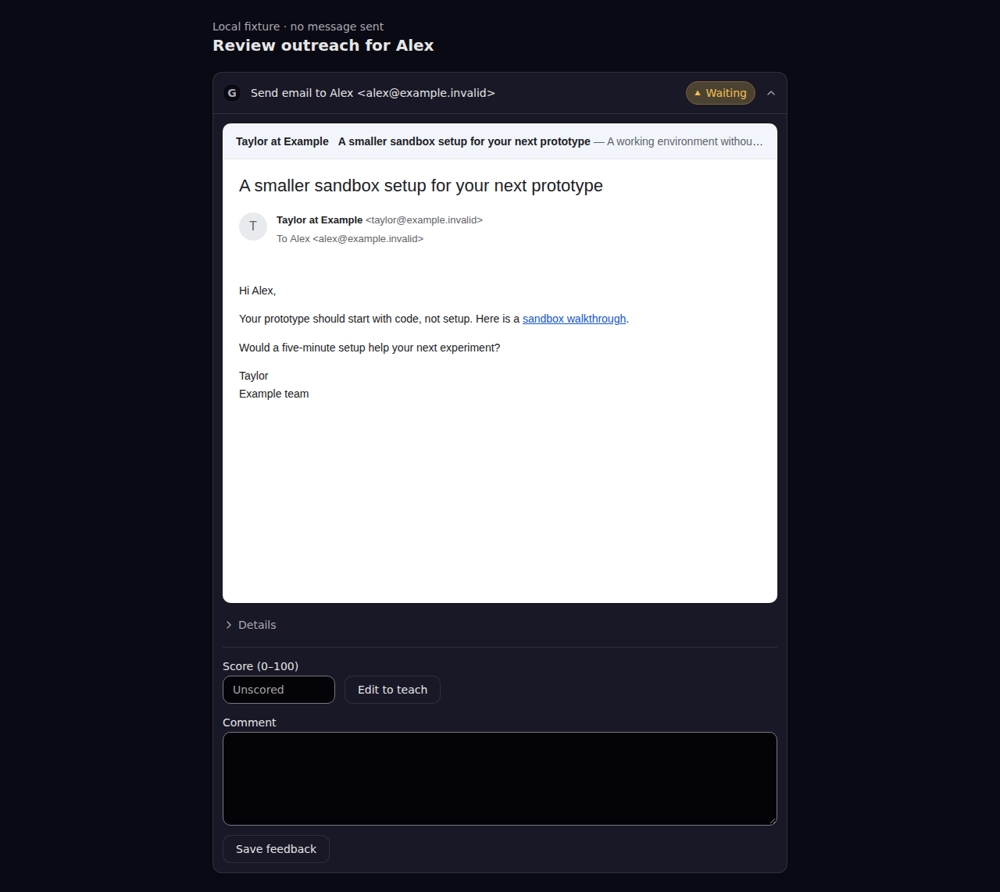
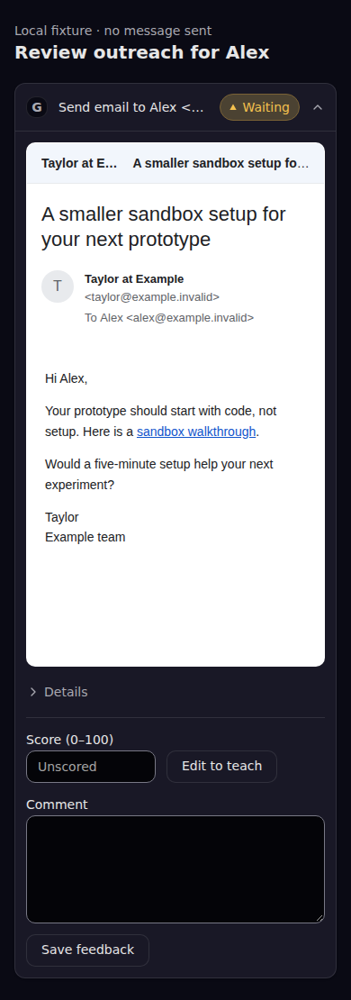
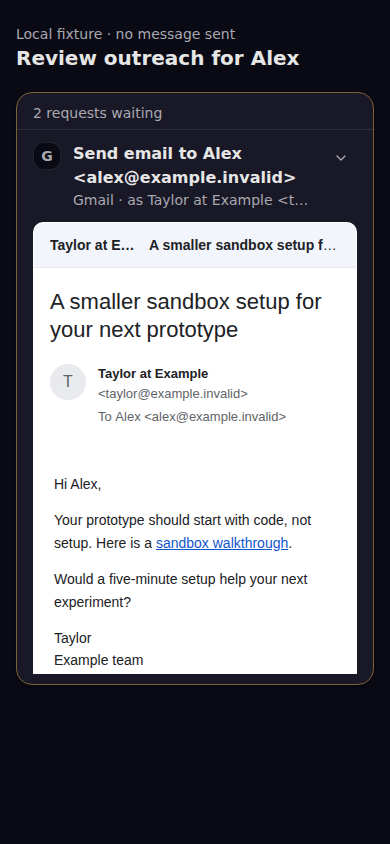
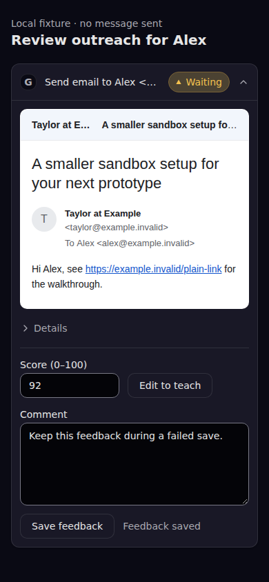
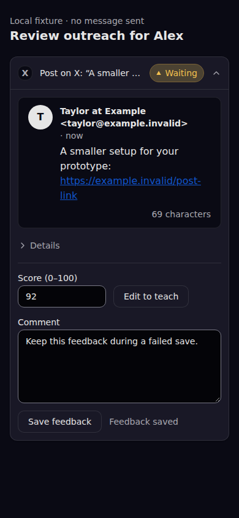
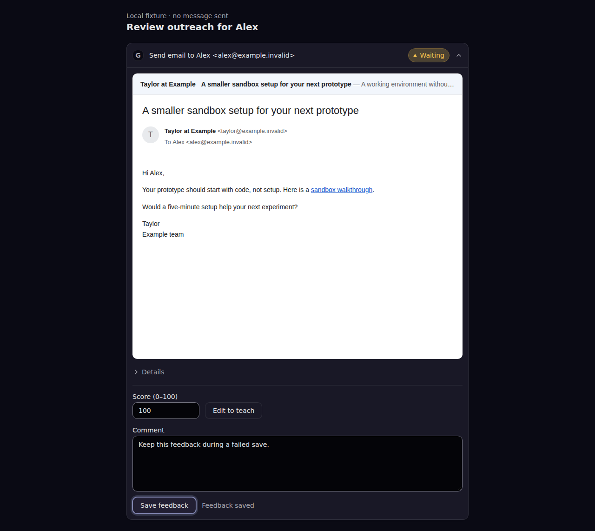
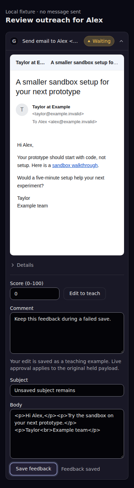

Local built package, real HTTP and SQLite fixture persistence. This is not production GTM proof or an actual Drew rating.







{
"target": "built shared approval UI with local HTTP/SQLite fixture transport; not deployed GTM",
"revision": "62936732fe423109e5cd8a93356b11567c8c5902",
"capturedAt": "2026-10-16T18:11:58.677Z",
"fault": false,
"checks": [
{
"name": "new preview starts without a human score",
"result": "PASS"
},
{
"name": "email HTML renders links but cannot execute or contact remote services",
"result": "PASS"
},
{
"name": "human-style score, comment and email edit persist as a server-computed diff",
"result": "PASS"
},
{
"name": "failed save preserves the entered score, comment and edit",
"result": "PASS"
},
{
"name": "0 and 100 are valid human scores, with phone and desktop layouts",
"result": "PASS"
},
{
"name": "dock reuses persisted feedback without approving a live effect",
"result": "PASS"
},
{
"name": "switching between held previews preserves separate unsaved drafts and truthful save status",
"result": "PASS"
},
{
"name": "save locks navigation and retains its success before host feedback refresh",
"result": "PASS"
},
{
"name": "plain email and social post links stay inert on click",
"result": "PASS"
}
],
"externalRequests": [],
"decisionCalls": 0,
"failedSaves": 1,
"browserErrors": [],
"savedFeedback": {
"score": 92,
"comment": "Keep this feedback during a failed save.",
"editedInput": {
"from": "Taylor at Example <taylor@example.invalid>",
"to": [
"Alex <alex@example.invalid>"
],
"subject": "Unsaved subject remains",
"previewText": "A working environment without another setup afternoon.",
"body": "<p>Hi Alex,</p><p>Try the sandbox on your next prototype.</p><p>Taylor<br>Example team</p>",
"html": true
},
"diff": [
{
"path": "subject",
"before": "A smaller sandbox setup for your next prototype",
"after": "Unsaved subject remains"
},
{
"path": "body",
"before": "<p>Hi Alex,</p><p>Your prototype should start with code, not setup. Here is a <a href=\"https://example.invalid/sandbox\">sandbox walkthrough</a>.</p><p>Would a five-minute setup help your next experiment?</p><p>Taylor<br>Example team</p><img src=\"https://example.invalid/tracking.gif\"><script>fetch(\"https://example.invalid/script\")</script><meta http-equiv=\"refresh\" content=\"0;url=https://example.invalid/redirect\"><link rel=\"stylesheet\" href=\"https://example.invalid/remote.css\"><form action=\"https://example.invalid/form\"><input type=\"submit\" value=\"Submit remote\"></form><iframe src=\"https://example.invalid/frame\"></iframe><object data=\"https://example.invalid/object\"></object>",
"after": "<p>Hi Alex,</p><p>Try the sandbox on your next prototype.</p><p>Taylor<br>Example team</p>"
}
],
"savedAt": "2026-10-16T18:11:56.865Z",
"reviewer": "fixture-reviewer",
"workProductId": "fixture-product-1",
"turnId": "fixture-turn-1",
"promptVersion": "fixture-prompt-1"
},
"missingCoverage": [
"Actual inbox side-by-side comparison",
"Actual Drew rating",
"Served GTM production flow",
"GTM Gmail dispatch integration"
]
}